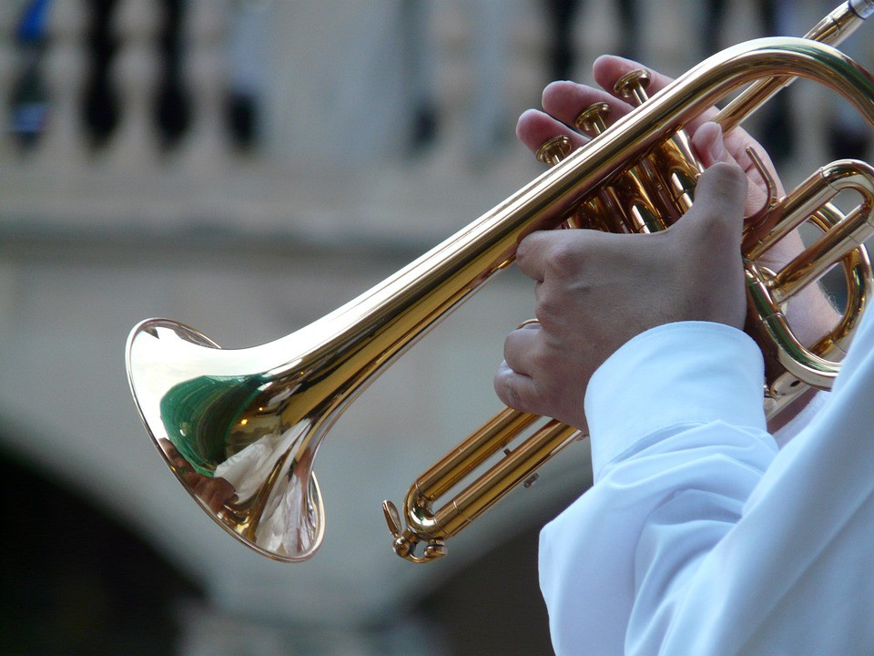
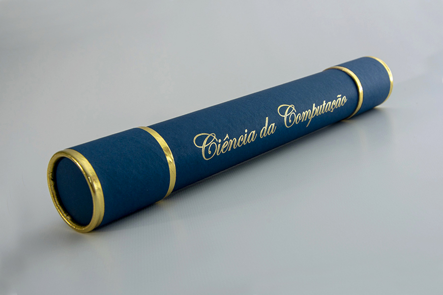

Música
"A música é a arte de manifestar os diversos afetos da nossa alma mediante o som.” A mesma música pode te fazer sorrir ou chorar; A música pode fazer você esquecer, mas também traz lembranças; A música te faz presente, mas também pode “matar” de saudade; A música fala com a nossa alma, o que as palavras soltas no ar não conseguem explicar; A música traz para a alma aquilo que nosso corpo não é capaz de sentir. Hoje a música está me confortando. Quando um filho de Deus deixa este mundo, para os anjos é como uma música. E hoje os anjos estão ouvindo uma melodia única, por que cada pessoa é única para nós, no entanto somos todos iguais diante de Deus. Saudade para nós deveria ser um alento; Pois, se sentimos saudade é porque amamos.
Violino

Sua origem vem de instrumentos trazidos do leste da Europa do Império Bizantino. Os primeiros violinos foram feitos na Itália entre os meados do fim do século XVI e o início do século XVII, evoluindo de antecessores como a rebec, a vielle e a lyra da braccio. A sua criação é atribuída ao italiano Gasparo de Salò.
Violino e sua história
O violino é um dos mais agudos instrumentos musicais. Seu timbre brilhante e inconfundível o torna parte fundamental de qualquer orquestra. Talvez seja por esses motivos que muitos o chamem de o “rei dos instrumentos”. De fato, a história do violino começa entre o fim do século XVI e o início do século XVII. É bem provável que o mesmo tenha surgido como uma evolução da rebec, vielle e da lyra da braccio, instrumentos que marcaram a música no fim da Idade Média e início do Renascimento. Contudo, podemos dizer que as origens do violino nos levam para uma época muito mais antiga, quando certos instrumentos orientais, como o nefer egípcio e o r’jenn sien chinês são criados. Estes foram base para a criação de inúmeros outros instrumentos musicais, conforme as necessidades acústicas que iam surgindo.
Trompete
O trompete, instrumento de sopro da família dos metais, passou por um longo processo de evolução que se iniciou na Antiguidade. Durante o período Barroco consolidou-se como instrumento solista, tornando-se uns dos instrumentos favoritos dos compositores desta época, que ficou conhecida como The Golden Age of Trumpet. Entre os instrumentos conhecidos da humanidade, o trompete está entre os instrumentos mais antigos e o que mais sofreu transformações e adaptações ao longo de sua história: “Trompetes e tambores são dois instrumentos muito antigos. Relatos da arte antiga e mesopotâmica proporcionam evidências concretas de que ambos os instrumentos já existiam há mais de cinco mil anos”.2 Seu nome modificou-se diversas vezes através deste processo. Os primeiros exemplares de trompetes de que temos conhecimento não possuíam coluna de ar vibratória, bocais ou campanas
Trompete e sua história
O trompete é um instrumento musical de sopro, da família dos metais (o trompete é o que produz o som mais agudo da família),[1] caracterizado por instrumentos de bocal, geralmente fabricados de metal. Também faz parte o pistão (pistom, por metonímia) é o sítio onde os trompetistas carregam para fazer um derivado de sons com o mesmo. Quem toca o trompete é chamado de trompetista.[2] O trompete é constituído por corpo, chave de água, bomba de afinação, pistões, cotovelos e bocal. É utilizado em diversos gêneros musicais, sendo muito comumente encontrado na música clássica, no jazz, bandas marciais e nos mariachis. Também é encontrado em estilos mais acelerados, como o frevo, o ska e latinos como o mambo e a salsa, bem como no Maracatu Rural, da zona da mata do norte de Pernambuco,o trompete tem as notas mais agudas na família dos metais e um papel preponderante na orquestra, o trompete possui um conjunto de válvulas e pistões que lhe permitem tocar sequências extremamente rápidas e virtuosas mas também uma melodia lírica e romântica acompanhada pelos restantes instrumentos.
Certificados
" Com muita luta e dedicação eu consegui concluir essa longa jornada. Foram 5 anos de muitos altos e baixos e hoje eu posso agradecer os familiares e amigos que me apoiaram nessa caminhada. Obrigado "
Ver certificadosMeus Projetos
"Aqui alguns projetos desenvolvidos por mim."
Meu projetos